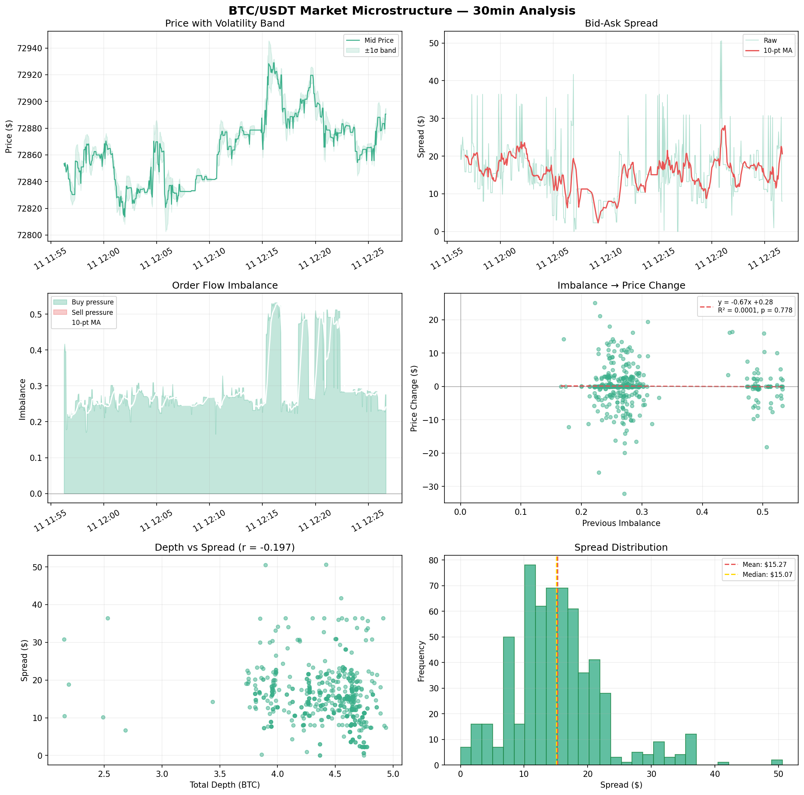

Live
Live
 Live
Live
 Live
Live
DepthLens
Real-time order book viewer with paper trading, VWAP/TWAP analytics, and order flow imbalance signal detection. WebSocket streaming at 100ms with persistent trade history and live P&L tracking.

LiveMarket Microstructure
BTC/USDT order book analysis — real-time data collection, spread dynamics, order flow imbalance, and statistical regression on 600+ snapshots.
[ screenshot ]
Live
Finance Ledger API
RESTful API for financial transaction management built with Spring Boot. Features comprehensive CRUD operations, JWT authentication, data validation, and clean architecture patterns.
[ screenshot ]
Live
XhemoBank
Android banking application demonstrating core mobile development patterns including user authentication, account management, and transaction handling.